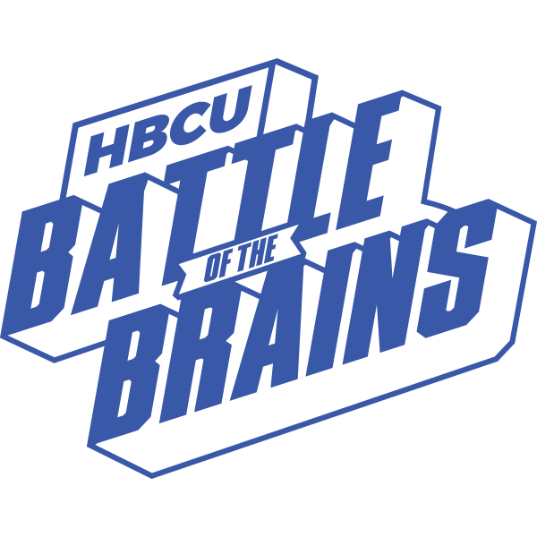

Oluwaseyi Adediwura
(713)-815-5014 ·
oadediwura@htu.edu
I am an individual of many passions and interests! I am a Software Engineer by day, and a Saxophonist by night, well sometimes. I add value to every group I am a part of by being versatile and a fast learner.
Experience
Software Engineering Intern
- Worked with the Tracking, Instrumentation and Experimentation Team (Lighthouse Analytics) to develop an android SDK to facilitate software standardization across android developers at PayPal
- Project saved Android developers at PayPal at least two weeks of work writing their own layer
San Jose, California
May 2018 – August 2018
May 2018 – August 2018
Research Fellow
- Analyzed over 3000 rows of the Jackson Heart Study Data using algorithms like random forest utilizing decision trees to suggest correlations between socioeconomic factors and cardiovascular diseases
- Utilized pandas and numpy for data manipulation and Matplotlib for data visualization
Austin, Texas
January 2018 – May 2018
January 2018 – May 2018
 Fellow
- Utilized HTML, CSS and Bootstrap 4 (responsiveness) to build the front-end of a website designed to attract millennials to home depot.
- Created a design that provided millennials the ability to reach an affiliated contractor from the comfort of their home, hence increasing millennial engagement with home depot.
Austin, Texas
March 2018
March 2018
 Information School Research Assistant
Information School Research Assistant
- Analyzed scientific papers to create a training dataset using JavaScript to aid machine learning in the creation of a software that will improve software citation visibility
Austin, Texas
November 2017 – March 2016
November 2017 – March 2016
Education
Huston-Tillotson University
Bachelor of Science
Mathematics
GPA: 4.0
August 2015 - May 2019
Skills
Programming Languages & Tools
Workflow
- Mobile-First, Responsive Design
- Cross Browser Testing & Debugging
- Cross Functional Teams
- Agile Development & Scrum
Interests
Apart from being a developer, I enjoy most of my time recording popular songs with my saxophone and uploading them to YouTube and Instagram. I particularly enjoy listening to music!
When I am not developing or playing my saxophone, I follow a number of sci-fi and fantasy genre movies and television shows, I am an aspiring chef, and I spend a large amount of my free time exploring the latest technology advancements in the data science and android development world.
Extracurricular Activities, Honors & Awards
- Mr. Huston – Tillotson University: Highest Male Leadership role serving in programming, service, and university representation
- NSBE Chapter President: Leading chapter of National Society of Black Engineers 2016-2018
- Science Sparring Founder: Created a jeopardy style science competition to increase STEM awareness
- Google Community Leader: Worked with the Housing Authority of the City of Austin as a Google Community Leader
- I – TREK @ Massachusetts Institute of Technology: I Turn Research into Empowerment and Knowledge Fellow
- TMCF Innovation & Entrepreneurship Program: Selected 1 out of 80 students working in development & entrepreneurship
- 2nd Place - in the Huston-Tillotson University Diversity Hackathon 2016
- HBCU Innovation Summit Scholar: 1 of 100 students selected to tour Silicon Valley and meet CEO’s from Google, Apple, and etc
- Avery Arthington Fund scholarship recipient at Huston-Tillotson University
- W.E.B DuBois Scholar at Huston-Tillotson University
- Golden Key Honors Society
- Beta Kappa Chi National Scientific Honors Society